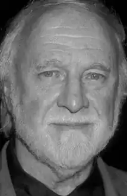
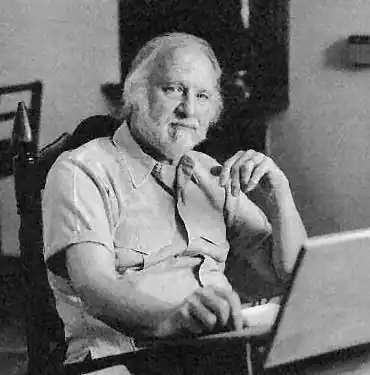

Річард Метісон народився 20 лютого 1926 у Аллендейлі (штат Нью-Джерсі) у родині Бертольфа та Фенні Метісон, іммігрантів з Норвегії. Дитинство письменника пройшло в Брукліні (Нью-Йорк). Його перше оповідання, яке Річард написав ще у восьмирічному віці, було опубліковано у місцевій газеті The Brooklyn Eagle.
1943 року, після закінченні Бруклінської Технічної школи[en], Метісон поступив на військову службу і у складі піхотних військ узяв участь у Другій світовій війні, про що пізніше написав в автобіографічному романі "Безбороді воїни"(1960).
Після війни Річард Метісон вивчав журналістику в Міссурійськом університеті і 1949 року отримав диплом бакалавра журналістики. 1951 року він переїхав до Каліфорнії, а 1 липня 1952 одружився з Рут Енн Вудсон. У пари народилося четверо дітей, троє з яких — Кріс, Річард Крістіан і Алі — згодом, як і батько, стали письменниками та сценаристами. Начитавшись у дитинстві казок та фантастичних історій, він реалізував мрію стати професійним письменником — 1950 року у журналі "The Magazine of Fantasy and Science Fiction" з'явилося його перше фантастичне оповідання про дитину-мутанта з неприродною лексикою "Born of Man and Woman" (перекладений як "Народжений чоловіком та жінкою" і "Народжений людьми"), а 1954-о року під такою ж назвою було опубліковано цілий збірник його розповідей. Метісон зізнався якось, що як батько чотирьох дітей, він зараз б не написав такої розповіді, як "Народжений людьми". Переїхавши 1951 року до Каліфорнії, він незабаром звернувся до написання історій, повних крижаного жаху, містики, фентезі ("Біла шовкова сукня", "Випий моєї крові", "Війна відьми", 1951; "Божевільний будинок", "Відповідати злочину", 1952; "Будинок різанини", "Волога солома", 1953 та ін.). Також він писав і детективи — 1953 року вийшли в світ ходять його романи "Лють у неділю" ("Fury on Sunday") та "Хтось спливає кров'ю" ("Someone Is Bleeding"). Деякі розповіді Метісона мають оригінальну кінцівку (скетчі "Third from the Sun", 1950); "Deadline", 1959 і "Кнопка, кнопка", 1970), інші ретельно досліджують характери героїв ("Trespass", 1953; "Being", 1954 і "Німий", 1962), треті пронизані сатирою на жанровими кліше ("The Funeral", 1955 і "The Doll that Does Everything", 1954). 1954 року з'явився "Я — легенда" ("I Am Legend"), його класичний роман про пандемію вампіризму, яку спричинив вірус, і про останню людину в світі, населеному виключно вампірами. Ідея роману сформувалась під враженням фільму "Дракула", коли Метісон сказав собі: а якщо замість одного вампіра їх буде цілий світ?! Роман "Я — легенда" був чотири рази екранізований: "Остання людина на Землі" (1964), "Людина Омега" (1971), "Я — Омега" (2007), "Я — легенда" (2007), і не лише прославив автора, а й породив цілу серію творів про вампірів різних авторів у 1970-ті роки. Не меншу популярність приніс Метісону екранізований роман "The Shrinking Man" (1957, "Людина, що стискається", інша назва — "Шлях вниз"). Зменшившися до розмірів огірка під впливом радіоактивних опадів, герой роману змушений битися з власною кішкою, павуками, що стали для нього грізною силою. Наприкінці 1950-х Метісон став сценаристом кінокомпанії American International Pictures, яка внесла значний внесок у розвиток фільмів жахів — Річард адаптував ряд творів Едгара По (сценарії "Падіння будинку Ашерів", 1960; "Колодязь та маятник", 1961; "Історії жаху", 1962 і "Ворон", 1963). працюючи над творами Едгара По, Річард вніс комічні нотки до сценаріїв, а "Ворона" перетворив на іскристу комедію. 1962 року разом з Чарльзом Бомонтом він написав сценарій за романом Фріца Лайбера "Чаклунка" ("Night of the Eagle" в Англії і "Burn, witch, burn" у США). Метісон звертався до творчості Жюля Верна і на базі двох його романів "Творець світу" та "Робур-Завойовник" написав сценарії для кіно. Блискучі розповіді Метісона було надруковано у п'яти збірниках (1961–1970) серіалу "Шок" ("Крикети", "Перша річниця", 1960; "Дівчина моїх мрій", "Ах, ця Джулія!", 1963; "Здобич", 1969; та багато інших). Більшість своїх оповідань (86 творів) він об'єднав у збірку "Збірка оповідань Річарда Метісона" (1989). 1986 року окремою книгою вийшли всі сценарії, написані Метісоном для серіалу "Сутінкова зона". 1971 року вийшов фільм "Дуель" ("Duel") режисера Стівена Спілберга. Сценарій спирався на особистий досвід Метісона, коли їх з другом, що поверталися безлюдною дорогою після гри в гольф, довго переслідувала важка вантажівка, параноїк-водій якого перетворив звичайну їзду на дуель не на життя, а на смерть. 1972 року Метісон адаптував для кінофільму роман Джефа Райса "Нічний переслідувач" ("The Night Stalker"), 1973 року — власний роман "Пекельний будинок" для фільму "Легенда пекельного будинку", 1975 року — створив "Трилогію Терору", а 1980 року з'явився "Десь у часі" ("Somewhere in Time"). Метісон регулярно писав сценарії для телесеріалу "Сутінкова зона", включаючи знамениту серію "Кошмар на висоті 20 000 футів", "The Invaders", "Steel" та інші. 1986 року всі свої сценарії цієї серії Метісон видав окремою книгою. Метісона часто публікували, і він є рекордсменом за кількістю варіантів його прізвища (Метсон, Мефсон, Матесон) на обкладинках книг. У 1990-ті роки Метісон видав серію книг-вестернів ("Journal of the Gun Years", "The Gun Fight", "By the Gun"). 1998 року за його романом "What Dreams May Come" знято фільм "Куди приводять мрії" з Робіном Вільямсом у головній ролі, а 1999 року чергова екранізація — "Відгомін луни". Виходять чергові романи ("Abu and the 7 Marvels" і "Hunted Past Reason", 2002; "Come Fygures, Come Shadowes", 2003). Троє з чотирьох його дітей (Кріс, Річард Крістіан і Алі) пішли стопами батька та стали письменниками та сценаристами. Найвідомішим тезкою батька є Річард Крістіан Метісон, що додає плутанини при обговоренні авторства робіт. Разом вони написали оповідання "Де є бажання" (1980). 2006 року Метісон написав твір "The Link".